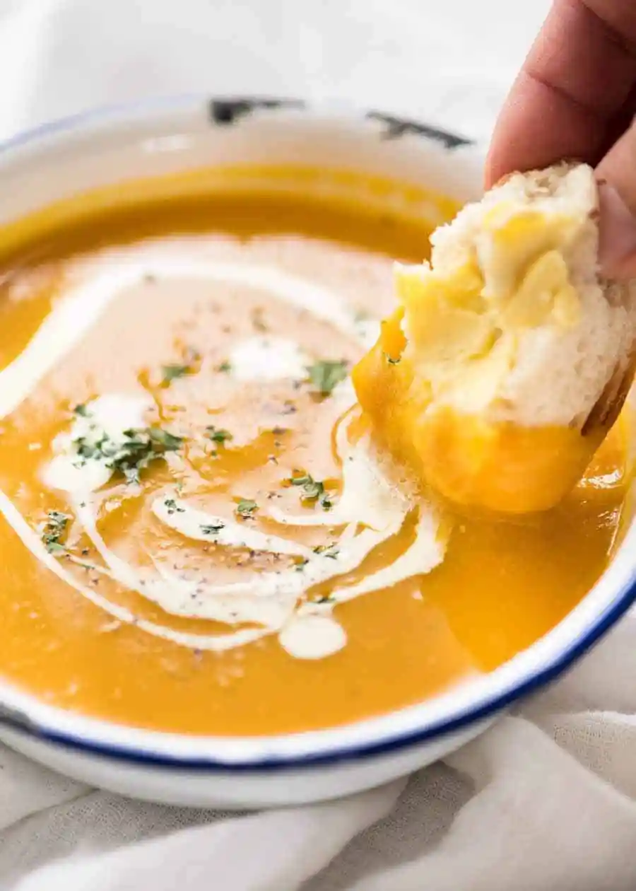

Ingredients
- Pumpkin – Peeled and chopped into large chunks (or purchase it pre-cut). See below for the best pumpkin to use and recipe notes for canned pureed pumpkin option;
- Onion and garlic – the secret ingredients that adds extra savouriness into the soup flavour!!
- Stock/broth and water – for a tastier pumpkin soup, don’t skip the broth!
- Milk, cream or half and half stirred through at the end. Here’s my view on cream. Does it make it better? Yes, insofar as adding richness to the soup. Is it necessary? Absolutely not. You do NOT need cream to make the soup thicker. All the thickness comes from the pumpkin itself. I usually make Pumpkin Soup with milk instead.
Steps
- Place peeled pumpkin, onion, garlic, broth/stock and water into a pot;
- Boil rapidly for 15 minutes until pumpkin is very tender;
- Use a stick blender or transfer to blender to blitz smooth; and
- Adjust salt and pepper to taste, then add either milk OR cream – whichever you prefer.
Back to homepage